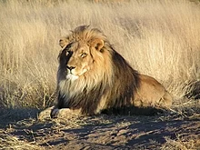

 The lion The lion (Panthera leo) is a species in the family Felidae and a member of the genus Panthera. It is most recognisable for its muscular, deep-chested body, short, rounded head, round ears, and a hairy tuft at the end of its tail. It is sexually dimorphic; adult male lions have a prominent mane. With a typical head-to-body length of 184–208 cm (72–82 in) they are larger than females at 160–184 cm (63–72 in). It is a social species, forming groups called prides. A lion pride consists of a few adult males, related females and cubs. Groups of female lions usually hunt together, preying mostly on large ungulates. The lion is an apex and keystone predator, although some lions scavenge when opportunities occur, and have been known to hunt humans, although the species typically does not.